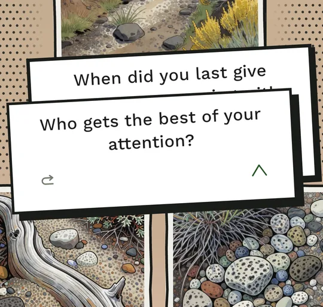

Self-reflection questions about home, and finding the one question worth asking yourself.
Home and place is too much ground for one good question: the apartment you rent, the house you grew up in, the town you moved to, the street you have lived on for thirty years. So a list of questions about all of it stays general. Add a second topic, and combined they get you closer to the question you were looking for, even if you did not know it yet.
Pick a second topic ↓Pick two topics
- Home and place
- Home, place, and where you belong
- Self and change
- Identity, change, starting out or starting over, and who you are becoming
Together, they hold situations like:
- The one who stayed, and the one who just arrived
- thirty years on the same street
- the first winter in a new town
- an accent that comes back on calls home
In Mind Wandern, a Path is a short series of self-reflection questions that starts somewhere in that combined ground.
In the app you can add more topics, or keep one away. For example:
- + The past → find situations about the home you left behind
- − The past → keep the past away, and focus the situations on the place you live now
Ten topics that narrow down a question about home
Your turn: pick a second topic for Home and place.
-
Home and place + Work and money → Paying for a place to live
Might ask
Once the rent is covered, what does your raise actually buy you?
the raise and the rentYour new pay and the landlord’s letter arrived in the same week. You stand at the kitchen counter with both papers.Walk through it -
Home and place + People close to you → A parent under your roof, or an ocean away
Might ask
When a parent calls with small news, what do you listen for underneath it?
the gate that brokeIt is past midnight where you are. Your mother is finishing breakfast and wants to tell you about the gate that broke in the wind.Walk through it -
Home and place + Community → Arriving on a street, or leaving one
Might ask
Since moving in, what small thing have you done that you would not have done a year ago?
tomatoes over the fenceYou have just learned your new neighbor’s name. She offers you a bag of tomatoes from a garden you have not yet walked into.Walk through it -
Home and place + The wider world → When the news comes close to home
Might ask
Which shop on your main street would you miss first?
the flyer about the bakeryThe bakery on the corner is on the council agenda next week. A neighbor has left a folded flyer asking whether you will come and speak.Walk through it -
Home and place + The body → How your home fits your body
Might ask
When you lie down to rest after a night’s work, what is on your mind?
sleeping in daylightYou worked all night. Just as you drift off, the bus outside starts again, and you lie in a rented room that still feels new.Walk through it -
Home and place + Attention and time → Under one roof, on separate screens
Might ask
What draws you to your phone the moment the plates are cleared?
after the dishesAfter dinner, everyone drifts to a different room with a different screen. The dishwasher hums in the empty kitchen.Walk through it -
Home and place + Self and change → The one who stayed, and the one who just arrived
Might ask
Which moment from years back first showed you that you were the one who stayed?
the one who stayedA young man with a stroller asks whether you have always lived on this street. You find yourself listing the neighbors who have come and gone since you moved in.Walk through it -
Home and place + The past → Passing the house you grew up in
Might ask
When you pass the house you grew up in, what do you notice first about how it has changed?
a stranger’s bike by the gateThe gate of the house you grew up in has a new latch. A stranger’s bike leans where yours used to stand, and inside, people are laughing.Walk through it -
Home and place + Desire and longing → Wanting a home you can settle into
Might ask
What has kept you from settling in where you actually live?
still in boxesYou have lived in the same rented apartment for years, and it still feels temporary. The neighbor’s child knocks to ask if you want to play catch in the courtyard.Walk through it -
Home and place + Meaning → Rituals that make a house a home
Might ask
Which evening pause have you kept on purpose, even after the prayers stopped?
the bottom stairEach night you stop on the bottom stair, where you used to kneel to pray. The quiet there has no words in it now.Walk through it -
Why not just a list of questions about home?
A list might ask
What does home mean to you? Where do you feel you belong?
Lists like that are written for anyone, about any home. They are a fine start, and if a list and a notebook are all you need, that is a good way to reflect.
But when home is on your mind, something else is usually tied up in it too: the rent, a parent, a move, the town you left. Starting there gets you to a question you can actually answer.

The whole Path, with every topic, in the app
Mind Wandern is a self-reflection app that finds the question worth asking yourself.
Pick the topics on your mind. When the way forks, pick the prompt that speaks to you more, until you reach the one question worth asking. There is nothing to write, so it stays private.
Learn how Mind Wandern works →Self-reflection questions by topic
- Work and money
- People close to you
- Home and place
- Community
- The wider world
- The body
- Attention and time
- Self and change
- The past
- Desire and longing
- Meaning